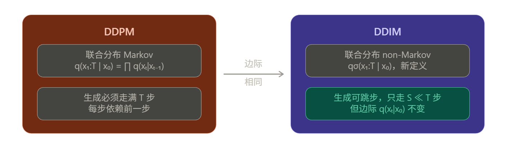
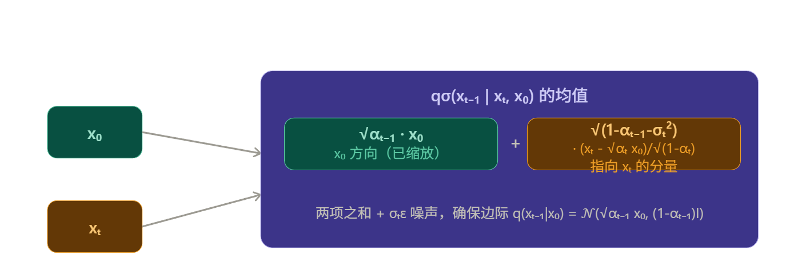
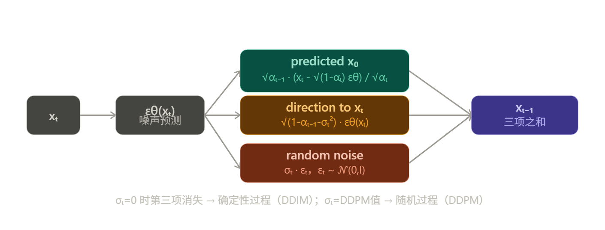
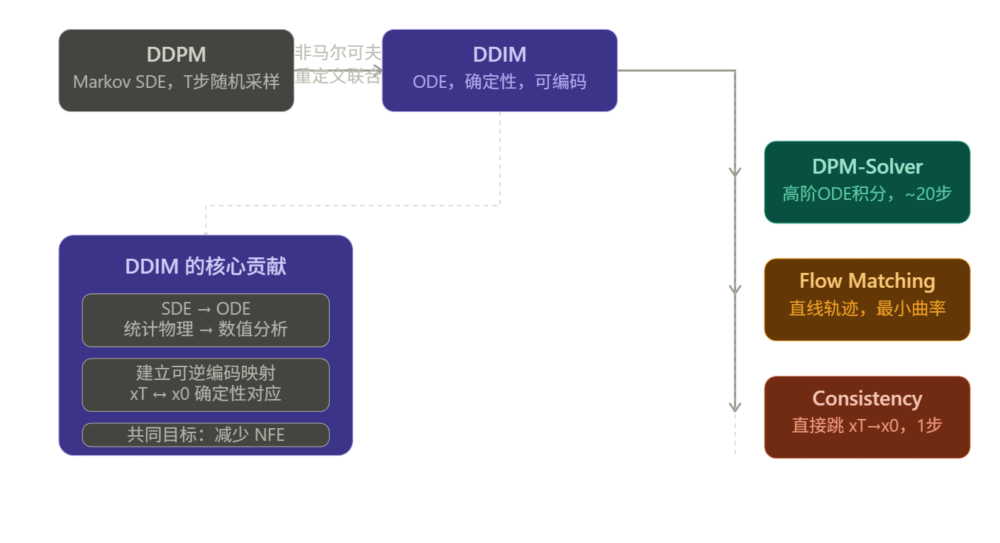

DDIM
DDPM 的根本问题
DDPM 的反向过程必须走 \(T\)（如 1000）步，因为它逼近的是正向 Markov 链的精确逆过程。核心约束是：
每一步都依赖上一步，无法跳过。
DDIM 的洞察是：训练目标 \(L_\gamma\) 只依赖于边际分布 \(q(\mathbf{x}_t | \mathbf{x}_0)\)，而不依赖联合分布 $q(\mathbf{x}_{1:T} | \mathbf{x}_0) $ 的具体形式。 因此可以找到一族新的联合分布，边际相同但联合结构不同，从而解耦生成步数。

如何重新定义联合分布
DDIM 定义了一族以 $\sigma \in \mathbb{R}^T_{\geq 0} $ 为参数的推断分布：
关键在于反向条件的定义（注意这不是 Markov 的，它同时条件在 $\mathbf{x}_t $ 和 $\mathbf{x}_0 $ 上）：
这个均值由两项构成：
几何直觉：在 \(x_0\) 和 \(x_t\) 的联合空间中，\(x_{t-1}\) 的均值是一个精心插值的点，使得边际 \(q_\sigma(x_{t-1}|x_0)\) 恰好等于 \(\mathcal{N}(\sqrt{\alpha_{t-1}}x_0, (1-\alpha_{t-1})\mathbf{I})\)。

边际一致性的严格证明（Lemma 1）
这是整个推导的合法性基础。需要证明：
证明思路（对 \(t\) 从 \(T\) 到 \(1\) 做归纳）：
对 \(t=T\)，由定义直接成立：\(q_\sigma(\mathbf{x}_T | \mathbf{x}_0) = \mathcal{N}(\sqrt{\alpha_T}\mathbf{x}_0, (1-\alpha_T)\mathbf{I})\)。
假设 \(t\) 时成立，即 \(q_\sigma(\mathbf{x}_t|\mathbf{x}_0) = \mathcal{N}(\sqrt{\alpha_t}\mathbf{x}_0, (1-\alpha_t)\mathbf{I})\)，对 \(t-1\) 利用全期望：
两个 Gaussian 的卷积，计算均值和方差：
均值： $\(\mu_{t-1} = \sqrt{\alpha_{t-1}}\mathbf{x}_0 + \sqrt{1-\alpha_{t-1}-\sigma_t^2} \cdot \frac{\sqrt{\alpha_t}\mathbf{x}_0 - \sqrt{\alpha_t}\mathbf{x}_0}{\sqrt{1-\alpha_t}} = \sqrt{\alpha_{t-1}}\mathbf{x}_0\)$
方差（利用条件 Gaussian 的方差传播公式）：
$\(\Sigma_{t-1} = \sigma_t^2 \mathbf{I} + \frac{1-\alpha_{t-1}-\sigma_t^2}{1-\alpha_t}(1-\alpha_t)\mathbf{I} = \sigma_t^2\mathbf{I} + (1-\alpha_{t-1}-\sigma_t^2)\mathbf{I} = (1-\alpha_{t-1})\mathbf{I}\)$
归纳完成。\(\sigma_t\) 如何取值都不影响边际，这就是 DDIM 可以用 DDPM 的预训练权重的数学根据。
从 \(q_\sigma\) 到生成步骤
实际生成时 \(\mathbf{x}*0\) 未知，用模型预测值 \(f_\theta^{(t)}(\mathbf{x}_t)\) 替代：
代入 \(q_\sigma\) 的均值公式，整理得到著名的生成更新公式：

为什么 σₜ=0 时可以跳步
这是 DDIM 最精妙的地方，分两个层次：
层次一：σₜ=0 使过程确定性
当 \(\sigma_t = 0\)，Eq. 12 中随机噪声项消失，\(\mathbf{x}_{t-1}\) 完全由 \(\mathbf{x}_t\) 决定，没有随机性。因此同一个 \(\mathbf{x}_T\) 始终生成同一张图（consistency 性质）。
层次二：训练目标对跳步成立
关键观察：训练目标 $L_\gamma = \sum_t \gamma_t \mathbb{E}\left[|\epsilon_\theta(\mathbf{x}_t) - \epsilon_t|^2\right] $ 只涉及边际 $q(\mathbf{x}_t|\mathbf{x}_0) $，与推断过程是否 Markov 无关。
定义子序列 $\tau = {\tau_1, \ldots, \tau_S} \subset {1,\ldots,T} $，只在这些时间步上运行生成过程。对应的边际仍满足：
这与完整 \(T\) 步时完全相同，因此同一个 \(\epsilon_\theta\) 网络可以直接用于跳步生成， 无需重新训练。更新方程只需把 \(\alpha_t \to \alpha_{\tau_i}\)，\(\alpha_{t-1} \to \alpha_{\tau_{i-1}}\) 即可。
与 Neural ODE 的联系
$\sigma_t=0 $ 时，DDIM 迭代等价于对如下 ODE 的 Euler 积分： $$ d\bar{\mathbf{x}}(t) = \epsilon_\theta^{(t)}!\left(\frac{\bar{\mathbf{x}}(t)}{\sqrt{\sigma^2+1}}\right) d\sigma(t) $$ 步长越大（跳步越多）→ Euler 误差越大 → 品质略降，但可用更少步数。这就是"用计算换质量"的 tradeoff 的精确含义。
Note
Theorem 1 的核心意义
Jσ = Lγ + C 说明：对任意 \(\sigma > 0\)，DDIM 的变分目标 \(J_\sigma\) 与 DDPM 目标 \(L_\gamma\)（某组权重）等价。由于 \(L_\gamma\) 的最优解不依赖于权重 \(\gamma\)（各 \(t\) 独立最优），所以：
用 DDPM 的 \(L_1\) 目标训练的模型，就是 \(J_\sigma\) 的最优解，对所有 \(\sigma\) 都成立。
这意味着用 DDPM 预训练的 checkpoint，换一个 \(\sigma\)（或 \(\sigma=0\)）就得到了质量更好、速度更快的 DDIM，完全不需要重新训练。
总结
Note
总结来说，DDIM构建了一个新的反向去噪过程，在保持前向加噪边缘分布的前提下，使用一种非马尔可夫的方式进行反向去噪，使得中间状态可以通过x0, xt确定的得到，而不需要进行SDE求解，可以直接进行ODE求解，为后续研究优化轨迹，通过确定性求解快速采样打下基础
DDIM 的非马尔可夫体现在推断过程中 \(q_\sigma(\mathbf{x}_{t-1}|\mathbf{x}_t, \mathbf{x}_0)\) 显式依赖 \(\mathbf{x}_0\)——这不是技术细节，而是让中间状态"有了锚点"。DDPM 每一步都在局部随机游走，而 DDIM 每一步都知道自己在往哪个 \(\mathbf{x}_0\) 走，所以才能以任意步长跳跃。
关于 ODE 的深层意义：从 SDE 到 ODE 的转变不只是"去掉了随机项"，更重要的是建立了一个可逆映射——\(\mathbf{x}_0 \leftrightarrow \mathbf{x}_T\) 之间存在确定性对应。这使得 DDIM 拥有了 Flow 模型和 VAE 才有的编码能力，可以把真实图像编码回潜变量，再在潜空间做语义插值，这是 DDPM 根本做不到的。

DDIM 在历史中的位置也值得一提：它本质上预示了后来整个研究方向的走向——把扩散模型的生成过程理解为一个 ODE/Flow 的积分问题，之后的 DDPM++、DPM-Solver、Flow Matching、Consistency Models 都是沿着这条路：如何用更少的 NFE（神经网络评估次数）更精确地积分这条轨迹。DDIM 是这条路的起点，它把一个统计物理问题（Langevin 扩散）重新诠释为一个数值分析问题（ODE 求解）。简单说：DDPM 提出了"用去噪来生成"的范式，DDIM 把这个范式从随机过程重新诠释为确定性积分，一句话打通了扩散模型与连续 normalizing flow 的理论联系，后续所有快速采样方法本质上都是在问同一个问题：这条 ODE 轨迹，能不能用更聪明的数值方法走得更准更快？